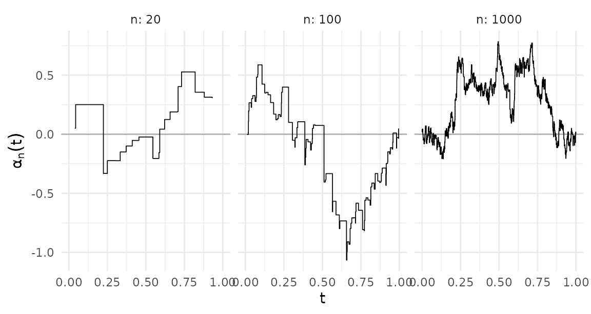

Significance testing for the PIT-Wasserstein metrics
significance-testing.Rmd
# library(pitw)
devtools::load_all()
#> ℹ Loading pitw
library(tidyverse)
#> ── Attaching core tidyverse packages ──────────────────────── tidyverse 2.0.0 ──
#> ✔ dplyr 1.2.1 ✔ readr 2.2.0
#> ✔ forcats 1.0.1 ✔ stringr 1.6.0
#> ✔ ggplot2 4.0.4 ✔ tibble 3.3.1
#> ✔ lubridate 1.9.5 ✔ tidyr 1.3.2
#> ✔ purrr 1.2.2
#> ── Conflicts ────────────────────────────────────────── tidyverse_conflicts() ──
#> ✖ readr::edition_get() masks testthat::edition_get()
#> ✖ dplyr::filter() masks stats::filter()
#> ✖ dplyr::lag() masks stats::lag()
#> ✖ readr::local_edition() masks testthat::local_edition()
#> ℹ Use the conflicted package (<http://conflicted.r-lib.org/>) to force all conflicts to become errors
set.seed(101)Each test compares a PIT-Wasserstein score with the values expected under its reference model. The scores measure departures of the probability integral transform (PIT) values from uniformity. The reference distributions are large-sample approximations and assume independent PIT values. In the EpiEstim example, each series contributes one estimate at a given window setting. Pooling the five settings would count the same series several times.
The worked example uses 120 normal
forecasts with a common location bias and reported standard deviations
smaller than the spread of the errors. We score the forecasts with
pit_w() and pass each score and the number of predictions
to its significance function. The signs and \(p\)-values describe different aspects of
the same set of forecasts.
1. The reference distribution for uniform PIT values
We compare the cumulative distribution of the PIT values with that of a uniform distribution. The Brownian bridge describes how this difference varies across repeated samples of independent uniform PIT values as the sample size increases.
1a. The empirical process
Under the baseline reference model, the PIT values \(u_i = F_i(x_i)\) are \(n\) independent draws from \(\mathrm{Uniform}(0,1)\). The comparison uses these values, which are on a common scale even when the predictive distributions differ.
Form the empirical CDF \(F_n(t) = \frac1n\#\{u_i \le t\}\) and compare it to the CDF it should have, which is \(F(t) = t\). The empirical process is the scaled gap between them:
\[ \alpha_n(t) = \sqrt{n}\left(F_n(t) - t\right) \]
The scaled difference has three properties.
- At any fixed \(t\), \(nF_n(t) \sim \mathrm{Binomial}(n, t)\), so \(\alpha_n(t)\) has mean \(0\) and variance \(t(1-t)\), and by the CLT it is asymptotically normal.
- At two points \(s < t\), the covariance works out as \(s(1-t) = s\wedge t - st\).
- At the ends, \(\alpha_n(0) = \alpha_n(1) = 0\) exactly, because the empirical CDF is pinned to 0 and 1 at the edges, whatever the sample.
The standard Brownian bridge \(B^\circ\) is a Gaussian process with mean zero, covariance \(s\wedge t - st\) and value zero at both endpoints. Donsker’s theorem gives the limit of the scaled difference.
\[ \alpha_n \;\Rightarrow\; B^\circ \qquad \text{(Donsker's theorem)} \]
# The empirical process of uniform PIT values, for increasing n.
tibble(n = c(20L, 100L, 1000L)) |>
mutate(draw = map(n, ~ {
u <- sort(runif(.x))
tibble(t = u, alpha = sqrt(.x) * (seq_along(u) / .x - u))
})) |>
unnest(draw) |>
ggplot(aes(t, alpha)) +
geom_hline(yintercept = 0, colour = "grey70") +
geom_step(linewidth = 0.3) +
facet_wrap(~ n, labeller = label_both) +
labs(x = "t", y = expression(alpha[n](t))) +
theme_minimal()
The path gets rougher as \(n\) grows but its vertical scale does not change: that is the \(\sqrt n\) doing its job. The limiting object is the same in all three panels.
1b. Comparing goodness-of-fit statistics
Several goodness-of-fit tests summarise the difference between these cumulative distributions. Their reference distributions use the corresponding summary of \(B^\circ\).
| Test | Statistic | Limit |
|---|---|---|
| Kolmogorov–Smirnov | \(\sup_t\lvert\alpha_n(t)\rvert\) | \(\sup_t\lvert B^\circ\rvert\) |
| Cramér–von Mises | \(\int\alpha_n^2\) | \(\int (B^\circ)^2\) |
| Anderson–Darling | \(\int \alpha_n^2 / (t(1-t))\) | weighted version |
| PIT-Wasserstein | \(\int\lvert\alpha_n\rvert\) | \(\int_0^1\lvert B^\circ\rvert\) |
KS takes the worst single point (\(L^\infty\)). Cramér–von Mises takes the mean square (\(L^2\)). Ours takes the mean absolute gap (the \(L^1\) norm), which is the area between the empirical CDF and the diagonal. That area is exactly the 1-Wasserstein distance between the PIT distribution and the uniform, which gives the continuous reference for our midpoint approximation.
Using the whole difference gives weight to small departures that persist across the PIT range. The Kolmogorov–Smirnov statistic uses the largest vertical difference.
# The same empirical process summarised three ways.
u <- sort(runif(60))
tibble(t = u, Fn = seq_along(u) / 60) |>
ggplot(aes(t)) +
geom_ribbon(aes(ymin = pmin(Fn, t), ymax = pmax(Fn, t)),
fill = "steelblue", alpha = 0.3) +
geom_step(aes(y = Fn)) +
geom_abline(slope = 1, intercept = 0, colour = "grey50") +
labs(x = "t", y = expression(F[n](t)),
subtitle = "shaded area = PIT-Wasserstein; KS = tallest vertical gap") +
theme_minimal()
1c. The effect of estimating a location shift
For the baseline score, the reference is determined by the number of independent uniform PIT values. Estimating a location shift from the same forecasts affects the adjusted PIT values and changes their reference distribution. Section 5 describes this for the undirected adjusted score.
2. The three metrics, and the three hypotheses
Given PIT values \(u_i\) with order statistics \(u_{(i)}\) and uniform plotting positions \(r_i = (i - \tfrac12)/n\), we use one statistic
\[ W(u) = \frac1n\sum_{i=1}^n \left| r_i - u_{(i)} \right| \]
and one signed variant, in which the signed discrepancy is multiplied by a weight that is \(+1\) in the lower half of the distribution and \(-1\) in the upper, so that over- and under-dispersion cancel rather than accumulate:
\[ D(u) = \frac1n\sum_{i=1}^n \left( r_i - u_{(i)} \right)\,\mathrm{sgn}\!\left(\tfrac12 - r_i\right) \]
The bias adjustment estimates a single location shift in the link scale, \(\hat\delta = \mathrm{median}_i\left(g(m_i) - g(x_i)\right)\) for predictive medians \(m_i\), applies it to the observations, and re-computes the PITs. Write \(u^{adj}\) for the result. The three metrics are then
| Metric | Definition | Large-sample reference |
|---|---|---|
| \(B_{pit}\) | \(W(u)\) | Independent uniform PIT values |
| \(D_{pit}\) | \(D(u^{adj})\) | Independent Gaussian errors with a common standard deviation on the link scale and a fitted median shift |
| \(U_{pit}\) | \(W(u^{adj})\) | The same fitted Gaussian model |
The baseline distance describes pooled PIT uniformity. The adjusted scores measure the direction and magnitude of the departure left after fitting a common shift. Their marginal tests use the same observations and may reject together.
# Row-wise metrics on a matrix of PIT values: one replicate per row.
pit_metrics <- function(v) {
n <- ncol(v)
s <- t(apply(v, 1, sort))
r <- matrix(seq(0.5 / n, 1 - 0.5 / n, length.out = n), nrow(v), n, byrow = TRUE)
list(W = rowMeans(abs(r - s)),
D = rowMeans((r - s) * sign(0.5 - r)))
}
null_pit <- function(n, reps = 4000) matrix(runif(n * reps), reps, n)3. The null of B_pit: an explicit formula
The difference between the midpoint distance and the distance to continuous uniformity is at most \(1/(4n)\). They therefore have the same scaled limit,
\[ \sqrt{n}\,B_{pit} \;\Rightarrow\; \int_0^1 \left| B^\circ(t) \right| \mathrm{d}t \]
Unlike the KS limit this one is not in every textbook, but it is known in closed form. Johnson & Killeen (1983) give the CDF of \(L = \int_0^1|B^\circ|\) as a rapidly convergent series,
\[ P(L \le \ell) = \sqrt{\pi/2}\sum_{j\ge1}\delta_j^{-3/2}\, \psi\!\left(\ell/\delta_j^{3/2}\right), \qquad \psi(t) = 3^{2/3}t^{-1/3}e^{-2/(27t^2)}\,\mathrm{Ai}\!\left((3t)^{-4/3}\right) \]
where \(\mathrm{Ai}\) is the Airy
function, \(a'_j\) is the \(j\)th zero of \(\mathrm{Ai}'\), and \(\delta_j = |a'_j|/2^{1/3}\). This is
implemented as p_l1_bridge() and
q_l1_bridge(); nothing beyond base R’s Bessel functions is
needed, since \(\mathrm{Ai}\) on the
positive axis is a modified Bessel function in disguise.
The mean of the limit is known exactly to be \(\sqrt{2\pi}/8 \approx 0.3133\), which gives a free and rather demanding check on the implementation:
tibble(
quantity = c("mean", "q95", "q99"),
series = c(integrate(function(x) 1 - p_l1_bridge(x), 0, 5,
subdivisions = 500L)$value,
q_l1_bridge(0.95), q_l1_bridge(0.99)),
theory = c(sqrt(2 * pi) / 8, NA, NA)
)
#> # A tibble: 3 × 3
#> quantity series theory
#> <chr> <dbl> <dbl>
#> 1 mean 0.313 0.313
#> 2 q95 0.582 NA
#> 3 q99 0.752 NAAt the nominal 5% level we compare \(B_{pit}\) with \(0.5821/\sqrt n\).
b_pit_significance() evaluates the limiting distribution.
The table below compares it with independent uniform samples of finite
size.
map_dfr(c(25L, 50L, 100L, 400L), function(n) {
b <- pit_metrics(null_pit(n))$W
tibble(n,
mean_sqrt_n = sqrt(n) * mean(b),
theory = sqrt(2 * pi) / 8,
q95_sqrt_n = sqrt(n) * quantile(b, 0.95),
size_0.05 = mean(b_pit_significance(b, n)$p_value < 0.05))
})
#> # A tibble: 4 × 5
#> n mean_sqrt_n theory q95_sqrt_n size_0.05
#> <int> <dbl> <dbl> <dbl> <dbl>
#> 1 25 0.311 0.313 0.582 0.05
#> 2 50 0.312 0.313 0.573 0.0455
#> 3 100 0.314 0.313 0.582 0.0505
#> 4 400 0.313 0.313 0.585 0.052Both \(\sqrt n\,\mathbb{E}B\) and \(\sqrt n\,q_{0.95}\) are flat in \(n\), confirming the scaling, and the test holds its nominal size.
Takács (1993) gives series for the \(L^1\) norm of Brownian motion. For the Brownian bridge we use the result of Johnson and Killeen (1983).
4. The Gaussian limit of D_pit
Writing \(w(t) = \mathrm{sgn}(\tfrac12 - t)\), the signed metric is a linear functional of the same process,
\[ \sqrt{n}\,D_{pit} \;\Rightarrow\; \int_0^1 w(t)\,B^\circ(t)\,\mathrm{d}t \]
A linear functional of a Gaussian process is Gaussian, so this limit is normal with mean zero, and its variance is a double integral against the bridge covariance:
\[ \mathrm{Var}\left( \int_0^1 w B^\circ \right) = \int_0^1\!\!\int_0^1 w(s)w(t)\left(s\wedge t - st\right)\mathrm{d}s\,\mathrm{d}t = \frac{1}{48} \]
The test therefore uses this large-sample reference:
\[ D_{pit} \;\approx\; \mathcal{N}\!\left(0,\;\frac{1}{48n}\right) \]
This is where the \(L^1\) family stops looking like KS: there is no signed variant of the supremum norm, because a supremum cannot cancel. Taking a signed integral is only available to us because we integrate.
# Simulate Brownian bridges and evaluate both limiting functionals directly.
sim_bridge <- function(reps = 2000, m = 1000) {
t <- seq_len(m) / m
incr <- matrix(rnorm(reps * m, sd = sqrt(1 / m)), reps, m)
w <- t(apply(incr, 1, cumsum)) # Wiener
b <- w - outer(w[, m], t) # bridge
wt <- matrix(sign(0.5 - t), reps, m, byrow = TRUE)
list(signed = rowMeans(b * wt), absolute = rowMeans(abs(b)))
}
bridge <- sim_bridge()
tibble(
quantity = c("Var(int w B)", "E|int |B||"),
simulated = c(var(bridge$signed), mean(bridge$absolute)),
theory = c(1 / 48, sqrt(2 * pi) / 8)
)
#> # A tibble: 2 × 3
#> quantity simulated theory
#> <chr> <dbl> <dbl>
#> 1 Var(int w B) 0.0205 0.0208
#> 2 E|int |B|| 0.314 0.313The simulated variance and mean can be compared with \(1/48\) and \(\sqrt{2\pi}/8\), respectively. Both the finite integration grid and the number of simulated paths affect this comparison. The next table uses raw uniform PITs to check the signed functional before fitting a shift.
map_dfr(c(10L, 25L, 50L, 100L, 400L), function(n) {
d <- pit_metrics(null_pit(n))$D
tibble(n,
n_var_D = n * var(d),
theory = 1 / 48,
size_0.05 = mean(d_pit_significance(d, n)$p_value < 0.05))
})
#> # A tibble: 5 × 4
#> n n_var_D theory size_0.05
#> <int> <dbl> <dbl> <dbl>
#> 1 10 0.0217 0.0208 0.0875
#> 2 25 0.0204 0.0208 0.056
#> 3 50 0.0214 0.0208 0.0598
#> 4 100 0.0208 0.0208 0.055
#> 5 400 0.0211 0.0208 0.051The simulation compares the finite-sample variance with \(1/48\) on the scaled statistic. At small sample sizes the two-sided test can reject more often than its nominal 5% level.
5. The reference distribution for adjusted PIT values
We estimate the location shift from the same forecasts that we score. In the common-scale Gaussian model, the reference distribution for \(U_{pit}\) accounts for this estimate. The same principle motivates the Lilliefors correction for the Kolmogorov–Smirnov test of normality after estimating the mean and variance from the sample.
Perturbing the location by \(\delta\) moves each PIT value by \(\varphi(\Phi^{-1}(t))\delta\) to first order, and the median centring pins the process at \(t = \tfrac12\), so the limit is the bridge with that direction projected out:
\[ \sqrt{n}\,U_{pit} \;\Rightarrow\; \int_0^1 \left| B^\circ(t) - \kappa(t)\,B^\circ(\tfrac12) \right| \mathrm{d}t, \qquad \kappa(t) = \frac{\varphi(\Phi^{-1}(t))}{\varphi(0)} \]
u_pit_significance() simulates and caches this limit
process. The sensitivity above is for a common-scale Gaussian location
model. In that model the limiting reference for \(\sqrt n\,U_{pit}\) is fixed. Under
link-scale adjustment, a different predictive family or varying forecast
scales can change the effect of estimating the location shift.
# The limit process of section 5, compared to the unprojected bridge.
t <- seq_len(1000) / 1000
kap <- dnorm(qnorm(t)) / dnorm(0)
incr <- matrix(rnorm(4000 * 1000, sd = sqrt(1 / 1000)), 4000, 1000)
w <- t(apply(incr, 1, cumsum))
b <- w - outer(w[, 1000], t)
proj <- b - outer(b[, 500], kap)
tibble(
limit = c("B (unprojected)", "U (projected)"),
mean = c(mean(rowMeans(abs(b))), mean(rowMeans(abs(proj)))),
q95 = c(quantile(rowMeans(abs(b)), 0.95), quantile(rowMeans(abs(proj)), 0.95))
)
#> # A tibble: 2 × 3
#> limit mean q95
#> <chr> <dbl> <dbl>
#> 1 B (unprojected) 0.311 0.569
#> 2 U (projected) 0.237 0.386and against the finite-sample adjusted metric, with genuinely heteroscedastic calibrated predictions:
adjusted_pits <- function(n, reps, kappa) {
mu <- matrix(rnorm(n * reps, 10, 2), reps, n)
sc <- matrix(exp(rnorm(n * reps, 0, kappa)), reps, n)
x <- matrix(rnorm(n * reps, mu, sc), reps, n)
b <- apply(mu - x, 1, median)
pnorm(x + b, mu, sc)
}
pmap_dfr(crossing(n = c(25L, 76L, 400L), kappa = c(0, 0.5)),
function(n, kappa) {
u <- pit_metrics(adjusted_pits(n, 2000, kappa))$W
tibble(n, kappa,
q95_U = quantile(u, 0.95),
q95_B = q_l1_bridge(0.95) / sqrt(n),
ratio = quantile(u, 0.95) / (q_l1_bridge(0.95) / sqrt(n)),
size = mean(u_pit_significance(u, n)$p_value < 0.05))
})
#> # A tibble: 6 × 6
#> n kappa q95_U q95_B ratio size
#> <int> <dbl> <dbl> <dbl> <dbl> <dbl>
#> 1 25 0 0.0742 0.116 0.637 0.0385
#> 2 25 0.5 0.0751 0.116 0.645 0.0415
#> 3 76 0 0.0429 0.0668 0.643 0.044
#> 4 76 0.5 0.0436 0.0668 0.654 0.0435
#> 5 400 0 0.0194 0.0291 0.667 0.0515
#> 6 400 0.5 0.0190 0.0291 0.653 0.0475Under the common-scale Gaussian model the 5% critical value for \(U_{pit}\) is about two-thirds of the baseline value. The rows with varying forecast scales check one particular simulation. Other families or patterns of variation can change the reference distribution. For illustration the two package functions assign different tail probabilities to a score of 0.05 with 76 independent predictions.
bind_rows(
b_pit_significance(0.05, 76) |> transmute(null = "baseline (wrong here)", p_value),
u_pit_significance(0.05, 76) |> transmute(null = "adjusted (correct)", p_value)
)
#> # A tibble: 2 × 2
#> null p_value
#> <chr> <dbl>
#> 1 baseline (wrong here) 0.165
#> 2 adjusted (correct) 0.0222In the common-scale Gaussian model the location correction is symmetric about the median. It integrates to zero against the antisymmetric weight of \(D_{pit}\). The same correction changes the absolute area used by \(U_{pit}\).
6. Choosing a scale for the adjustment
6a. Link-scale and probit adjustments
The package offers a median adjustment on the link scale or on the probit scale. The paper uses the link scale to represent a common location bias.
Bias is a location error in \(x\)-space. An \(x\)-space shift \(\delta\) becomes a heterogeneous shift \(\delta/\sigma_i\) in probit space, so the correction required on the probit scale depends on the forecast standard deviation. Under homoscedasticity the two coincide; under heteroscedasticity they diverge, and the symptom is a loss of the log-calibration symmetry of the metric.
That symmetry is a theorem, not an observation. With no bias and constant \(\sigma\) the probit-transformed PIT values are exactly \(z_i \sim \mathcal{N}(0, s)\) with \(s = \sigma_E/\sigma_S\), so the PIT CDF is \(F_s(p) = \Phi(\Phi^{-1}(p)/s)\) and
\[F_{1/s}(p) = \Phi\!\left(s\,\Phi^{-1}(p)\right) = F_s^{-1}(p)\]
Inverting a monotone function reflects its graph in the diagonal, which preserves the area between graph and diagonal. So \(\int_0^1|F_s(p)-p|\,dp\) is exactly invariant under \(c \leftrightarrow 1/c\): an estimator twice too wide and one twice too narrow score identically. The identity concerns population distances for constant scales.
asymmetry <- function(c_cal, n = 2000, reps = 400) {
b <- runif(reps, -1, 1)
k <- runif(reps, 0, 2)
e <- matrix(rnorm(n * reps), reps, n) + b
sc <- matrix(rlnorm(n * reps, log(c_cal), sqrt(log(k^2 + 1))), reps, n)
z <- -e / sc
c(link_space = mean(pit_metrics(pnorm((-e + apply(e, 1, median)) / sc))$W),
probit_mean = mean(pit_metrics(pnorm(z - rowMeans(z)))$W),
probit_med = mean(pit_metrics(pnorm(z - apply(z, 1, median)))$W))
}
hi <- asymmetry(2); lo <- asymmetry(0.5)
tibble(adjustment = names(hi), U_at_c_2 = hi, U_at_c_half = lo,
asymmetry_pct = 100 * (hi - lo) / ((hi + lo) / 2))
#> # A tibble: 3 × 4
#> adjustment U_at_c_2 U_at_c_half asymmetry_pct
#> <chr> <dbl> <dbl> <dbl>
#> 1 link_space 0.0867 0.0851 1.91
#> 2 probit_mean 0.0928 0.155 -50.3
#> 3 probit_med 0.0832 0.0981 -16.4With varying scales, the link adjustment removes the simulated common bias in outcome units. Centring the probits instead removes a common shift in standardised errors. The two operations answer different questions.
6b. Directed scores after fitting the shift
adjusted_null <- function(n, bias, kappa, reps = 4000) {
e <- matrix(rnorm(n * reps), reps, n) + bias
sc <- if (kappa == 0) matrix(1, reps, n) else
matrix(rlnorm(n * reps, 0, sqrt(log(kappa^2 + 1))), reps, n)
d <- pit_metrics(pnorm((-e + apply(e, 1, median)) / sc))$D
tibble(n, bias, kappa, n_var_D = n * var(d),
size = mean(d_pit_significance(d, n)$p_value < 0.05))
}
pmap_dfr(crossing(n = c(100L, 400L), bias = c(0, 1), kappa = c(0, 0.5, 2)),
adjusted_null) |>
mutate(theory = 1 / 48)
#> # A tibble: 12 × 6
#> n bias kappa n_var_D size theory
#> <int> <dbl> <dbl> <dbl> <dbl> <dbl>
#> 1 100 0 0 0.0207 0.0492 0.0208
#> 2 100 0 0.5 0.0223 0.057 0.0208
#> 3 100 0 2 0.0325 0.124 0.0208
#> 4 100 1 0 0.0204 0.0495 0.0208
#> 5 100 1 0.5 0.0230 0.0648 0.0208
#> 6 100 1 2 0.0329 0.123 0.0208
#> 7 400 0 0 0.0207 0.048 0.0208
#> 8 400 0 0.5 0.0236 0.0672 0.0208
#> 9 400 0 2 0.0346 0.127 0.0208
#> 10 400 1 0 0.0205 0.0488 0.0208
#> 11 400 1 0.5 0.0243 0.0707 0.0208
#> 12 400 1 2 0.0328 0.120 0.0208With \(\kappa = 0\), the location adjustment cancels to first order in the Gaussian limit. In the simulation, \(n\mathrm{Var}(D)\) stays near \(1/48\) and the rejection rate is close to nominal with or without a common bias.
At \(\kappa>0\) reported spreads vary independently of the size of the errors. The rejection proportions in those rows describe a departure from the reference model.
7. What exactly is the null hypothesis?
The following simulation keeps the median reported spread equal to the error standard deviation and varies the spread from case to case. We compare the resulting PIT tail frequency with the 10% expected under uniformity.
map_dfr(c(0, 0.25, 0.5, 1, 2), function(k) {
n <- 5000; reps <- 200
e <- matrix(rnorm(n * reps), reps, n)
sc <- if (k == 0) matrix(1, reps, n) else
matrix(rlnorm(n * reps, 0, sqrt(log(k^2 + 1))), reps, n)
u <- pnorm(-e / sc)
tibble(kappa = k,
E_B_pit = mean(pit_metrics(u)$W),
tail_mass = mean(u < 0.05 | u > 0.95)) # uniform => 0.10
})
#> # A tibble: 5 × 3
#> kappa E_B_pit tail_mass
#> <dbl> <dbl> <dbl>
#> 1 0 0.00453 0.100
#> 2 0.25 0.00571 0.116
#> 3 0.5 0.0115 0.147
#> 4 1 0.0253 0.200
#> 5 2 0.0411 0.253So \(H_0\) for \(B_{pit}\) is not “the median predictive width is correct”. It is PIT uniformity, which in this simulation family requires the dispersion ratio \(c = 1\) and \(\kappa = 0\).
Here \(\kappa>0\) means that the reported spread varies independently of the error distribution. A correctly specified heteroscedastic forecast can also report different spreads. If the conditional distribution of the outcome matches each forecast, the PIT values are uniform.
8. Reading the three tests together
The metrics respond to \(\kappa\) quite differently, and the contrast is useful rather than inconvenient:
sweep_c <- function(c_cal, kappa, n = 20000, reps = 100) {
e <- matrix(rnorm(n * reps), reps, n)
sc <- if (kappa == 0) matrix(c_cal, reps, n) else
matrix(rlnorm(n * reps, log(c_cal), sqrt(log(kappa^2 + 1))), reps, n)
m <- pit_metrics(pnorm((-e + apply(e, 1, median)) / sc))
tibble(c_cal, kappa, U = mean(m$W), D = mean(m$D))
}
pmap_dfr(crossing(c_cal = c(0.5, 0.8, 1, 1.25, 2), kappa = c(0, 0.5, 1, 2)),
sweep_c) |>
pivot_wider(names_from = c_cal, values_from = c(U, D)) |>
print(width = Inf)
#> # A tibble: 4 × 11
#> kappa U_0.5 U_0.8 U_1 U_1.25 U_2 D_0.5 D_0.8 D_1 D_1.25
#> <dbl> <dbl> <dbl> <dbl> <dbl> <dbl> <dbl> <dbl> <dbl> <dbl>
#> 1 0 0.102 0.0353 0.00176 0.0353 0.102 0.102 0.0353 0.0000194 -0.0353
#> 2 0.5 0.0950 0.0322 0.0110 0.0328 0.0951 0.0950 0.0322 -0.0000470 -0.0321
#> 3 1 0.0843 0.0308 0.0252 0.0370 0.0848 0.0843 0.0278 -0.000203 -0.0283
#> 4 2 0.0719 0.0424 0.0410 0.0474 0.0776 0.0715 0.0236 -0.000151 -0.0237
#> D_2
#> <dbl>
#> 1 -0.102
#> 2 -0.0951
#> 3 -0.0842
#> 4 -0.0715In this simulation the average directed score stays near zero at \(c=1\) as \(\kappa\) increases. The average unsigned score increases. Independent variation in the scales can put excess PIT mass both near the endpoints and near the centre. Some departures then cancel in the directed score.
At \(n=200\), what fraction of replicate sets gives a rejection at the nominal 5% threshold? We calculate all three proportions for each of six scenarios, fitting a separate median shift in each replicate.
scenario <- function(label, bias, c_cal, kappa, n = 200L, reps = 400) {
e <- matrix(rnorm(n * reps), reps, n) + bias
sc <- if (kappa == 0) matrix(c_cal, reps, n) else
matrix(rlnorm(n * reps, log(c_cal), sqrt(log(kappa^2 + 1))), reps, n)
B <- pit_metrics(pnorm(-e / sc))$W # unadjusted
m <- pit_metrics(pnorm((-e + apply(e, 1, median)) / sc)) # adjusted
tibble(label, bias, c_cal, kappa,
B_pit = mean(b_pit_significance(B, n)$p_value < 0.05),
D_pit = mean(d_pit_significance(m$D, n)$p_value < 0.05),
U_pit = mean(u_pit_significance(m$W, n)$p_value < 0.05))
}
pmap_dfr(tribble(
~label, ~bias, ~c_cal, ~kappa,
"calibrated", 0, 1, 0,
"pure bias", 1, 1, 0,
"over-confident", 0, 0.7, 0,
"over-conservative", 0, 1.3, 0,
"spread-error decoupling", 0, 1, 1,
"bias + over-conservative", 1, 1.3, 0
), scenario)
#> # A tibble: 6 × 7
#> label bias c_cal kappa B_pit D_pit U_pit
#> <chr> <dbl> <dbl> <dbl> <dbl> <dbl> <dbl>
#> 1 calibrated 0 1 0 0.0525 0.0475 0.0375
#> 2 pure bias 1 1 0 1 0.0475 0.0375
#> 3 over-confident 0 0.7 0 0.97 1 1
#> 4 over-conservative 0 1.3 0 0.665 0.99 0.98
#> 5 spread-error decoupling 0 1 1 0.192 0.09 0.68
#> 6 bias + over-conservative 1 1.3 0 1 0.988 0.96A common shift produces a large baseline distance in this simulation. A pure width error can also produce a large baseline distance and can cause all three tests to reject. The sign of \(D_{pit}\) then gives the net direction of the remaining error. Under independently varying spread, \(U_{pit}\) can detect departures that largely cancel in \(D_{pit}\). A shape error can give a similar pattern. The table reports marginal rejection rates for known scenarios. It supplies neither a unique diagnosis nor a joint 5% test.
9. In practice
We simulate 120 observations from normal distributions with means 0.8 above their forecast means. Each forecast reports a standard deviation of one, while the standard deviation of the simulated errors is 1.4.
set.seed(2024)
n <- 120
mu <- rnorm(n, 10, 2)
sc <- rep(1, n)
x <- rnorm(n, mu + 0.8, 1.4) # biased AND over-confident
s <- pit_w(x, mu, sc, dist = "norm", link = "identity")
bind_rows(
b_pit_significance(s$B_pit, n) |> transmute(metric = "B_pit", value = B_pit, p_value),
d_pit_significance(s$D_pit, n) |> transmute(metric = "D_pit", value = D_pit, p_value),
u_pit_significance(s$U_pit, n) |> transmute(metric = "U_pit", value = U_pit, p_value)
)
#> # A tibble: 3 × 3
#> metric value p_value
#> <chr> <dbl> <dbl>
#> 1 B_pit 0.227 1.67e-15
#> 2 D_pit 0.0351 7.72e- 3
#> 3 U_pit 0.0369 3.79e- 2All three tests reject in this example. The positive \(D_{pit}\) is consistent with the reported spread being too narrow. We know the bias and the distributional family from the simulation design. The baseline score was \(0.227\). The adjusted scores were \(0.035\) for \(D_{pit}\) and \(0.037\) for \(U_{pit}\).
prediction_scores() additionally reports
n_predictions, so the three tests can be applied directly
to a table of scored forecasters.
10. Caveats
Independence. Here \(n\) counts independent predictions. Rolling estimates from one series may share observations or be correlated even when their windows do not overlap. The nominal thresholds can then misstate the evidence. In the EpiEstim study each comparison uses independent replicates.
Small \(n\). All three tests use limiting reference distributions. In the simulated Gaussian setting, the \(D_{pit}\) normal approximation is mildly anti-conservative below \(n \approx 50\) (empirical size around 8% at \(n = 10\)).
Skewed predictive families. Constructing a
calibrated example outside log-symmetric families needs care,
independently of any of the above. For a scale family \(X = \mu W\) with \(\mathrm{median}(W) = 1\), placing
predictions at \(\mu_i =
F_W^{-1}(q_i)\) gives \(u_i =
F_W(x_0/\mu_i)\), which is uniform only if \(W \overset{d}{=} 1/W\), which is true for
lnorm4 but false for gamma4. The correct
placement solves \(F(x_0;\mu_i) = 1 -
q_i\):
calibrated_locations <- function(qs, x0, kappa, qfn) x0 / qfn(1 - qs, 1, kappa)
qs <- seq(1, 199, 2) / 200
tibble(
placement = c("naive quantiles", "calibrated"),
B_pit = c(
pit_w(2.5, qgamma4(qs, 2.5, 0.5), 0.5, dist = "gamma4", link = "log")$B_pit,
pit_w(2.5, calibrated_locations(qs, 2.5, 0.5, qgamma4), 0.5,
dist = "gamma4", link = "log")$B_pit)
)
#> # A tibble: 2 × 2
#> placement B_pit
#> <chr> <dbl>
#> 1 naive quantiles 2.35e- 2
#> 2 calibrated 7.11e-17Use \(B_{pit}\) rather than \(U_{pit}\) for this kind of construction check: it asks the unconditional question and does not estimate anything from the sample.
Summary
- The PIT values of a calibrated forecaster are uniform, so the gap between their empirical CDF and the diagonal converges to a Brownian bridge. The limiting Wasserstein statistic uses its \(L^1\) norm and Kolmogorov–Smirnov uses its supremum.
- \(\sqrt n\,B_{pit} \Rightarrow \int_0^1|B^\circ|\), with an explicit CDF from Johnson & Killeen (1983): a 5% critical value of \(0.5821/\sqrt n\).
- \(\sqrt n\,D_{pit} \Rightarrow \mathcal{N}(0, 1/48)\) under the stated assumptions. The finite-sample test uses this limit as an approximation.
- The bias adjustment estimates a parameter from the same data, so \(U_{pit}\) needs its own null, which is the Lilliefors step. Its critical value is two thirds of \(B_{pit}\)’s in the Gaussian reference model. In that model the location adjustment cancels to first order for \(D_{pit}\).
- The adjustment must live in the link scale, not in PIT space, or bias-invariance under heteroscedasticity is lost.
- \(H_0\) is PIT uniformity, which is stronger than “the median width is correct”: spread–error decoupling is an alternative, not a null.
- Report all three with their \(p\)-values and interpret them alongside the fitted shift and the forecast design. The three tests use the same predictions.